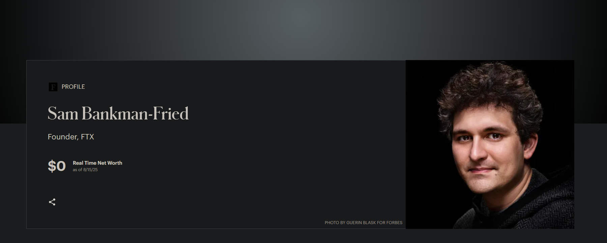
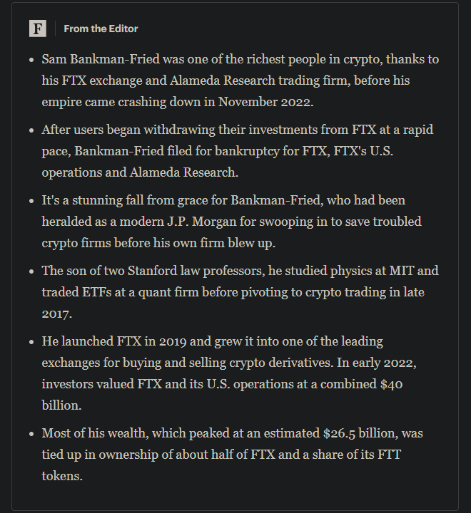
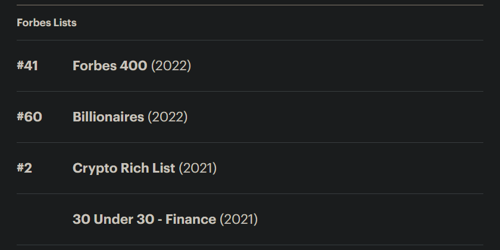

FTX 往事#
2022 年 11 月，彼时全球第二大的 crypto 交易所 FTX 破产，导致数百亿美元资产突然灰飞烟灭，crypto 市场的流动性也大幅紧缩。2025 年中，此时 crypto 市场的总市值已经数倍于 FTX 破产时，稳定币市场尤其火热，crypto 已经是全球名副其实的合规金融资产，承载着无数投资者财富自由的梦想（还是幻想？）。一篇回顾 FTX 破产风波的文章再次将我的思绪拉回到 3 年前的那个冬天。
2022 年 10 月，crypto 市场总市值已经相比年初高位下跌了超过 50%，且行业中小型机构的破产潮还在蔓延，当时就连全球最大的交易所 Binance 即将资不抵债的传闻也在广泛传播，基本上所有在交易所持有资产的投资者都人心惶惶，我自己也不例外。在我将部分 token 从 Binance 和 OKX 分散到 Bitfinex 后，下一步就计划将部分 token 转移到 FTX 中。但是由于 FTX 的 KYC 资料实在是太过于繁琐，且在多次尝试后依然没能成功注册账户，因此我就暂时搁置了这件事情。当时我还向家人讲述 FTX 创始人 SBF 的光辉事迹，如何成为 Forbes 30-under-30 的成员。
  
上图是现在 Forbes 30-under-30 名人堂对 SBF 的介绍，可以清楚地看到他现在的财富是 0$。即使他曾是顶级量化机构 Jane Street 的天才员工，又有在 Stanford 法学院任职的教授父母，但他的后半生也只能在监狱中度过（如果没有减刑）。他虽然给自己包装成为信奉“利他主义”的慈善家，但实际上却是为了攫取更大利益而挪用客户资金的欺诈人员（虽然这与 Wall Street 的银行家和 Capitol Hill 的政客并没有不同），他在狱中的“忏悔”大概率也是没能提前应对 Binance 的 CZ 对 FTT 的抛售所导致的流动性枯竭，而非愧对大量因为 FTX 破产而损失资金的客户。
以上 Telegram Channel 记录摘自一名台湾 KOL，在 FTX 破产前我关注他的频道至少超过半年。虽然无从证实他的言论，但至少也是当时 FTX 破产受害者的缩影。我时常在想，“懒惰”应对 FTX 繁琐 KYC 的我侥幸逃过了部分资产损失，更加深了我对“正确的选择远胜错误的努力”观念的印象。
在青年时期有 FTX 破产风波这样的亲身经历，我对“年少成名或许是诅咒”有了更加深刻的看法。“年少成名”很有可能是市场短周期的 alpha 而非自己能够稳定控制的 beta，在尾部风险来临时，由于没有长周期对波动的合理认识和应对方案，最终可能会犯下埋葬终生的错误。“一将功成万骨枯”，年少时对这句话的理解更多集中在前半部分，而经历过数个周期波动后仍然存活的人才更能体会到后半部分。
从反脆弱的角度来看，已经存在的事物通常都会比新生事物更能延续存在。因此需要警惕任何周期内新产生的“天才叙事”和技术理想主义的陷阱，并且要冷静地回归常识，再新的游戏也需要古老的规则。
在金融市场中，胜利和高位并不是真正值得炫耀的成果，经历时间的磨损而不出局才是最值得追求的永恒价值。
2025.8.16